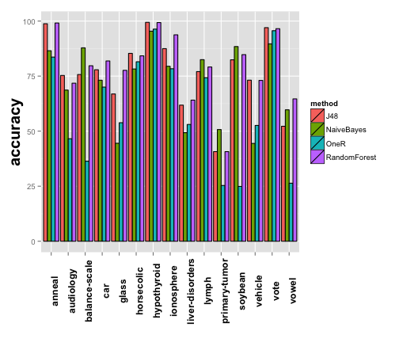
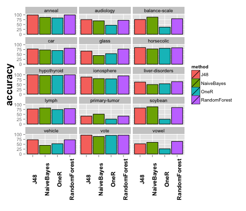
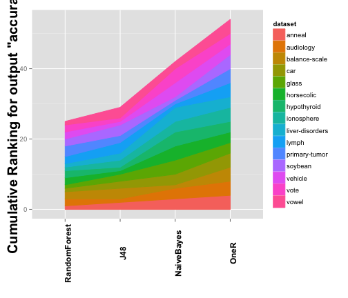
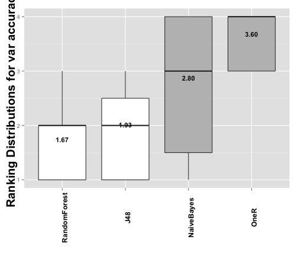

<div class="container">
 <div class="row">
   <div class="col-md-4">
       <h3>Available examples:</h3>
       <hr/>
       <div class="list-group">
         <a href="#" class="list-group-item active">
           <h4 class="list-group-item-heading">Machine Learning Weka Basic</h4>
           <p class="list-group-item-text">
             This example features a Machine Learning experiment
             in which several algorithms from the Weka library are
             compared given a set of benchmark datasets.
           </p>
         </a>
         <a href="#" class="list-group-item disabled">
           <h4 class="list-group-item-heading">Not yet available</h4>
           <p class="list-group-item-text">
             We will add more examples as soon as possible.
           </p>
         </a>
       </div>
       <hr/>
       <div class="alert alert-info" role="alert">
         Please do not hesitate to propose new examples to be included in this page
       </div>
     </div> <!-- End of column-->

     <div class="col-md-8">
<h3>Machine Learning Weka Example Basic</h3>
<a href="./examples/example1/report.html" target="_blank" class="btn btn-success">See HTML Generated Report</a>
<a href="./examples/example1/report.pdf" target="_blank" class="btn btn-success">See PDF Generated Report</a>
<br>
<br>
<h3>Introduction</h3>

<p>
In this example we make use of the <i>wekaExperiment</i> dataset that is packaged
with exreport. This datasets represents a series of experiment in which several
Machine Learning classifiers are compared by using a set of public datasets
(UCI repository) as benchmark. The performance measures are the classification
accuracy and the training time and have been obtained from a 10-fold cross-validation.
</p>

<p>
The <i>wekaExperiment</i> contains a variable for the method and dataset and two
variables for the respective outputs. The datasets contains two parameters, the
mentioned fold of the cross-validation for each entry and an additional boolean
parameter to indicate if feature selection has been performed or not in the execution.
</p>

<div class="chunk" id="unnamed-chunk-1"><div class="rcode"><div class="source"><pre class="knitr r"><span class="hl kwd">library</span><span class="hl std">(exreport)</span>
<span class="hl kwd">colnames</span><span class="hl std">(wekaExperiment)</span>
</pre></div>
<div class="output"><pre class="knitr r">## [1] &quot;method&quot;           &quot;dataset&quot;          &quot;featureSelection&quot;
## [4] &quot;fold&quot;             &quot;accuracy&quot;         &quot;trainingTime&quot;
</pre></div>
</div></div>

<p>
In this example we will start with a basic workflow in which we will compare the
performace regarding accuracy of the different methods. For that we will follow
the proposed scheme for an exreport procedure: "Process, Validate, Describe, Visualice"
</p>

<p>
We will start by loading the experiment into an exreport object, notice that we
must indicate that the numeric variable "fold" is in fact a parameter.
</p>

<div class="chunk" id="unnamed-chunk-2"><div class="rcode"><div class="source"><pre class="knitr r"><span class="hl std">experiment</span> <span class="hl kwb">&lt;-</span> <span class="hl kwd">expCreate</span><span class="hl std">(wekaExperiment,</span> <span class="hl kwc">name</span><span class="hl std">=</span><span class="hl str">&quot;weka&quot;</span><span class="hl std">,</span> <span class="hl kwc">parameters</span><span class="hl std">=</span><span class="hl kwd">c</span><span class="hl std">(</span><span class="hl str">&quot;fold&quot;</span><span class="hl std">))</span>
</pre></div>
</div></div>

<p>
A first look into the object shows us the different number of methods and datasets
of our experiment as well as he different parameters and outputs. We can also
access the raw data of the experiment by obtaining the coresponding parameter:
</p>

<div class="chunk" id="unnamed-chunk-3"><div class="rcode"><div class="source"><pre class="knitr r"><span class="hl kwd">summary</span><span class="hl std">(experiment)</span>
</pre></div>
<div class="output"><pre class="knitr r">## 1) Experiment weka loaded from a data set.
##
## experiment
##
## #method: NaiveBayes, J48, RandomForest, OneR
## #dataset: hypothyroid, liver-disorders, vehicle, car, ionosphere, soybean, vote, anneal, lymph, vowel, audiology, glass, primary-tumor, balance-scale, horsecolic
##
##
## #parameters: featureSelection, fold
## #outputs: accuracy, trainingTime
</pre></div>
<div class="source"><pre class="knitr r"><span class="hl com"># Print a few lines of random raw data</span>
<span class="hl kwd">head</span><span class="hl std">(experiment</span><span class="hl opt">$</span><span class="hl std">data)</span>
</pre></div>
<div class="output"><pre class="knitr r">##       method     dataset featureSelection fold accuracy trainingTime
## 1 NaiveBayes hypothyroid               no    0  94.9735       0.0824
## 2 NaiveBayes hypothyroid               no    1  93.6508       0.0177
## 3 NaiveBayes hypothyroid               no    2  93.6340       0.0065
## 4 NaiveBayes hypothyroid               no    3  94.9602       0.0059
## 5 NaiveBayes hypothyroid               no    4  95.2255       0.0045
## 6 NaiveBayes hypothyroid               no    5  95.7560       0.0045
</pre></div>
</div></div>


<h3>Preprocessing</h3>

<p>
First of all, we will check the integrity of our experiment by checking that
there are not repeated entries that would disrupt the analysis:
</p>

<div class="chunk" id="unnamed-chunk-4"><div class="rcode"><div class="source"><pre class="knitr r"><span class="hl kwd">expGetDuplicated</span><span class="hl std">(experiment)</span>
</pre></div>
<div class="output"><pre class="knitr r">## experiment
##
## #method:
## #dataset:
##
##
## #parameters: featureSelection, fold
## #outputs: accuracy, trainingTime
</pre></div>
</div></div>

<p>
The resulting experiment is empty, so we are allowed to continue
</p>

<p>
Before proceeding with any kind of analysis we must preprocess our results by
performing the appropiate operations. We will begin by aggregating the result of
the 10-fold cross validation performed for each method and dataset. For that, we
reduce the fold parameter by using the mean function:
</p>

<div class="chunk" id="unnamed-chunk-5"><div class="rcode"><div class="source"><pre class="knitr r"><span class="hl std">experiment</span> <span class="hl kwb">&lt;-</span> <span class="hl kwd">expReduce</span><span class="hl std">(experiment,</span> <span class="hl str">&quot;fold&quot;</span><span class="hl std">,</span> <span class="hl kwc">FUN</span> <span class="hl std">= mean)</span>
<span class="hl com"># Print a few lines of random raw data</span>
<span class="hl kwd">head</span><span class="hl std">(experiment</span><span class="hl opt">$</span><span class="hl std">data)</span>
</pre></div>
<div class="output"><pre class="knitr r">##         method   dataset featureSelection accuracy trainingTime
## 1          J48    anneal               no 98.77529      0.03192
## 2   NaiveBayes    anneal               no 86.52808      0.00989
## 3         OneR    anneal               no 83.63296      0.00804
## 4 RandomForest    anneal               no 99.10737      0.03578
## 5          J48 audiology               no 75.29644      0.01859
## 6   NaiveBayes audiology               no 68.65612      0.00545
</pre></div>
</div></div>

<p>
Our first objetive will be to compare the different methods given its accuracy results,
for that we first need to obtain a particular configuration of the parameters.
Now that the <i>fold</i> parameter has been removed we have to deal with the
<i>featureSelection</i> one. In our first test we want to compare the experiments
performed when this parameter is set to <i>"no"</i>, so we perform a subset operation.
</p>

<div class="chunk" id="unnamed-chunk-6"><div class="rcode"><div class="source"><pre class="knitr r"><span class="hl std">experiment</span> <span class="hl kwb">&lt;-</span> <span class="hl kwd">expSubset</span><span class="hl std">(experiment,</span> <span class="hl kwd">list</span><span class="hl std">(</span><span class="hl kwc">featureSelection</span> <span class="hl std">=</span> <span class="hl str">&quot;no&quot;</span><span class="hl std">))</span>
</pre></div>
</div></div>

<p>
Now that we have a single configuration we instantiate the methods with the
available paramaters. In this case, the <i>featureSelection</i> can be removed as
it is unary:
</p>

<div class="chunk" id="unnamed-chunk-7"><div class="rcode"><div class="source"><pre class="knitr r"><span class="hl std">experiment</span> <span class="hl kwb">&lt;-</span> <span class="hl kwd">expInstantiate</span><span class="hl std">(experiment,</span> <span class="hl kwc">removeUnary</span> <span class="hl std">= T)</span>
</pre></div>
</div></div>


<h3>Evaluation</h3>

<p>
Our experiment is now ready to be validated by using statistical tests. In this
case we have more than two methods, so we will choose a multiple comparison test.
We want to obtain a ranking among the methods and decide which one is the best one,
for that we will perform a "testMultipleControl" test, including a Friedman test
followed by a post-hoc test using the Holm procedure. As the target variable is
the accuracy, the test will measure maximization.
</p>

<div class="chunk" id="unnamed-chunk-8"><div class="rcode"><div class="source"><pre class="knitr r"><span class="hl std">testAccuracy</span> <span class="hl kwb">&lt;-</span> <span class="hl kwd">testMultipleControl</span><span class="hl std">(experiment,</span> <span class="hl str">&quot;accuracy&quot;</span><span class="hl std">,</span> <span class="hl str">&quot;max&quot;</span><span class="hl std">)</span>
<span class="hl kwd">summary</span><span class="hl std">(testAccuracy)</span>
</pre></div>
<div class="output"><pre class="knitr r">## ---------------------------------------------------------------------
## Friedman test, objetive maximize output variable accuracy. Obtained p-value: 1.1365e-04
## Chi squared with 3 degrees of freedom statistic: 20.8400
## Test rejected: p-value: 1.1365e-04 &lt; 0.0500
## ---------------------------------------------------------------------
## Control post hoc test for output accuracy
## Adjust method: Holm
##
## Control method: RandomForest
## p-values:
##             J48	0.5716
##      NaiveBayes	0.0324
##            OneR	0.0001
## ---------------------------------------------------------------------
</pre></div>
</div></div>

<p>
The test show that there is a clearly hierarchy between the methods, and that
some of them are statistically superior to the others. In the next section we
will summarize this results and generate some graphics and tables.
</p>

<h3>Visualization</h3>

<p>
The previous test show that our results are promising, however we may want to
observe at detail the results. For that exreport is packed with many plots and
tables.
</p>

<p>
We will start by obtaining a visual overview of the performance of the methods.
For that, we can summarize the experiment with an appropiate bar plot. There is
a perfect built in function to achieve this:
</p>

<div class="chunk" id="unnamed-chunk-9"><div class="rcode"><div class="source"><pre class="knitr r"><span class="hl std">plot1</span> <span class="hl kwb">&lt;-</span> <span class="hl kwd">plotExpSummary</span><span class="hl std">(experiment,</span> <span class="hl str">&quot;accuracy&quot;</span><span class="hl std">)</span>
<span class="hl std">plot1</span>
</pre></div>
</div><div class="rimage default"></div><div class="rcode">
<div class="output"><pre class="knitr r">## [1] &quot;Results for output \&quot;accuracy\&quot;&quot;
</pre></div>
</div></div>

<p>
The plot is nice, but perhaps there are too much datasets and the results are not
clearly displayed. Luckily, the majority of the graphical exreport functions can
be parametrized, in this case, we will split the plot by methods.
</p>

<div class="chunk" id="unnamed-chunk-10"><div class="rcode"><div class="source"><pre class="knitr r"><span class="hl std">plot1</span> <span class="hl kwb">&lt;-</span> <span class="hl kwd">plotExpSummary</span><span class="hl std">(experiment,</span> <span class="hl str">&quot;accuracy&quot;</span><span class="hl std">,</span> <span class="hl kwc">columns</span> <span class="hl std">=</span> <span class="hl num">3</span><span class="hl std">)</span>
<span class="hl std">plot1</span>
</pre></div>
</div><div class="rimage default"></div><div class="rcode">
<div class="output"><pre class="knitr r">## [1] &quot;Results for output \&quot;accuracy\&quot;&quot;
</pre></div>
</div></div>

<p>
Next, we want to obtain additional information from the test we performed before.
We will start by looking at the different ranks computed for the Friedman test,
for that we have another built in function.
</p>

<div class="chunk" id="unnamed-chunk-11"><div class="rcode"><div class="source"><pre class="knitr r"><span class="hl std">plot2</span> <span class="hl kwb">&lt;-</span> <span class="hl kwd">plotCumulativeRank</span><span class="hl std">(testAccuracy)</span>
<span class="hl std">plot2</span>
</pre></div>
</div><div class="rimage default"></div><div class="rcode">
<div class="output"><pre class="knitr r">## [1] &quot;Cumulative Ranking for Var accuracy&quot;
</pre></div>
</div></div>

<p>
The plot is a good representation of the results obtained by the test. However,
we want to look at the results with some numeric precission. For that, we can
generate a table using another built in function. In this case we generate a
tabular summary for the test, in which we specify the different metric we need.
</p>

<div class="chunk" id="unnamed-chunk-12"><div class="rcode"><div class="source"><pre class="knitr r"><span class="hl std">table1</span> <span class="hl kwb">&lt;-</span> <span class="hl kwd">tabularTestSummary</span><span class="hl std">(testAccuracy,</span> <span class="hl kwc">columns</span> <span class="hl std">=</span>  <span class="hl kwd">c</span><span class="hl std">(</span><span class="hl str">&quot;pvalue&quot;</span><span class="hl std">,</span> <span class="hl str">&quot;rank&quot;</span><span class="hl std">,</span> <span class="hl str">&quot;wtl&quot;</span><span class="hl std">))</span>
<span class="hl std">table1</span>
</pre></div>
<div class="output"><pre class="knitr r">## $testMultiple
##                    method       pvalue     rank win tie loss
## RandomForest RandomForest           NA 1.666667  NA  NA   NA
## J48                   J48 0.5716076450 1.933333   9   0    6
## NaiveBayes     NaiveBayes 0.0324190828 2.800000  11   0    4
## OneR                 OneR 0.0001232936 3.600000  15   0    0
</pre></div>
</div></div>

<p>
The final element we are going to create is a graphical representation of the
Holm's post-hoc test using another built in functions, that generates a plot
comparing the ranks distributions as well as the status of the test hypotheses.
</p>

<div class="chunk" id="unnamed-chunk-13"><div class="rcode"><div class="source"><pre class="knitr r"><span class="hl std">plot3</span> <span class="hl kwb">&lt;-</span> <span class="hl kwd">plotRankDistribution</span><span class="hl std">(testAccuracy)</span>
<span class="hl std">plot3</span>
</pre></div>
</div><div class="rimage default"></div><div class="rcode">
<div class="output"><pre class="knitr r">## [1] &quot;Distribution of ranks for output \&quot;accuracy\&quot;&quot;
</pre></div>
</div></div>

<p>
We are good with all of this new information, but surely we will be more confortable
to study it out of the console, in fact, we need to discuss it with our coleages, so
why not generating a nice graphical report?
</p>

<h3>Communicating</h3>

<p>
At this point we can collect all the output we have generated during this exreport
workflow and pack it into a nice document. In this case we will be creating an interactive
HTML report, from which we are going to b able to download the figures and the LaTeX code
of the figures.
</p>

<p>
We start by initializing the report object:
</p>

<div class="chunk" id="unnamed-chunk-14"><div class="rcode"><div class="source"><pre class="knitr r"><span class="hl std">report</span> <span class="hl kwb">&lt;-</span> <span class="hl kwd">exreport</span><span class="hl std">(</span><span class="hl str">&quot;Your wekaExperiment example report&quot;</span><span class="hl std">)</span>
</pre></div>
</div></div>

<p>
And now it is time to add some content, be aware that the order of the elements in
the report coincides with the order you add them. All the exreport objects have its
own HTML and PDF representation, showing detailled summaries of their values and
the operations performed with them.
</p>

<div class="chunk" id="unnamed-chunk-15"><div class="rcode"><div class="source"><pre class="knitr r"><span class="hl com"># Add the experiment object for reference:</span>
<span class="hl std">report</span> <span class="hl kwb">&lt;-</span> <span class="hl kwd">exreportAdd</span><span class="hl std">(report, experiment)</span>
<span class="hl com"># Now add the test:</span>
<span class="hl std">report</span> <span class="hl kwb">&lt;-</span> <span class="hl kwd">exreportAdd</span><span class="hl std">(report, testAccuracy)</span>
<span class="hl com"># Finally you can add the different tables and plots.</span>
<span class="hl std">report</span> <span class="hl kwb">&lt;-</span> <span class="hl kwd">exreportAdd</span><span class="hl std">(report,</span> <span class="hl kwd">list</span><span class="hl std">(plot1,plot2,table1,plot3))</span>
</pre></div>
</div></div>

<p>
At this point we would like to include an additional item in our report.
We need a detailed table of our experiment, as we are preparing
a scientific paper and we would like to have an overview of it to be included in
an annex, despite the good summaries that we are providing with the plots and tests.
Fortnunately, we have another built in function for this.
</p>

<p>
We have decided to generate the table at this point of the tutorial to discusse
some special formating parameters of this function. Concretely, some of the
tabular outputs generated by exreport have some properties that are only useful
when rendering the objets in a graphic report, and have no effect in the object
representation in the R console. In this case, we will tell the function to
boldface the method that maximices the result for each column, and to split the
table into to pieces when rendering.
</p>

<div class="chunk" id="unnamed-chunk-16"><div class="rcode"><div class="source"><pre class="knitr r"><span class="hl com"># We create the table:</span>
<span class="hl std">table2</span> <span class="hl kwb">&lt;-</span> <span class="hl kwd">tabularExpSummary</span><span class="hl std">(experiment,</span> <span class="hl str">&quot;accuracy&quot;</span><span class="hl std">,</span> <span class="hl kwc">digits</span><span class="hl std">=</span><span class="hl num">4</span><span class="hl std">,</span> <span class="hl kwc">format</span><span class="hl std">=</span><span class="hl str">&quot;f&quot;</span><span class="hl std">,</span> <span class="hl kwc">boldfaceColumns</span><span class="hl std">=</span><span class="hl str">&quot;max&quot;</span><span class="hl std">,</span> <span class="hl kwc">tableSplit</span><span class="hl std">=</span><span class="hl num">2</span><span class="hl std">)</span>
<span class="hl com"># And add it to the report:</span>
<span class="hl std">report</span> <span class="hl kwb">&lt;-</span> <span class="hl kwd">exreportAdd</span><span class="hl std">(report, table2)</span>
</pre></div>
</div></div>

<p>
Now that we have finished adding elements to the report it is time to render it.
We want to generate an HTML report, so we call the appropiate function, by default
it renders and opens the report in your browser using a temporary file, but you
can optionally specify a folder in which the report will be saved for future use.
</p>

<div class="chunk" id="unnamed-chunk-17"><div class="rcode"><div class="source"><pre class="knitr r"><span class="hl com"># Render the report:</span>
<span class="hl kwd">exreportRender</span><span class="hl std">(report,</span> <span class="hl kwc">target</span> <span class="hl std">=</span> <span class="hl str">&quot;HTML&quot;</span><span class="hl std">,</span> <span class="hl kwc">visualize</span> <span class="hl std">= T)</span>
</pre></div>
</div></div>
<br>
<a href="./examples/example1/report.html" target="_blank" class="btn btn-success">See HTML Generated Report</a>
<a href="./examples/example1/report.pdf" target="_blank" class="btn btn-success">See PDF Generated Report</a>
<br>
<br>
<br>
   </div> <!-- End of column-->
 </div><!-- End of row-->
</div><!-- End of container-->
